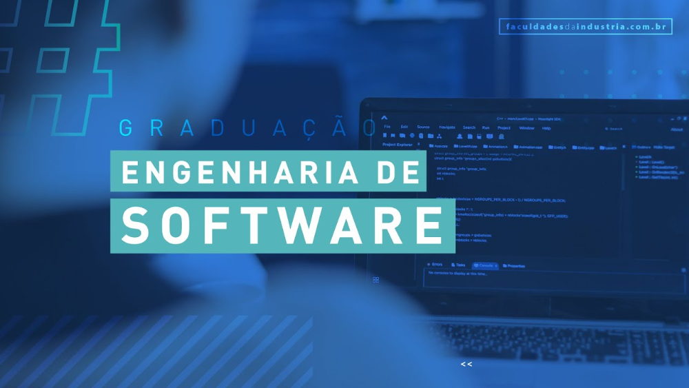

1 Período

Ementa: Estratégias de leitura de textos com léxico computacional:
inferências a partir da análise de
títulos, gráficos, ilustrações, acionamento do conhecimento
prévio sobre o tema, vocabulário cognato e
o significado do vocabulário desconhecido a partir do contexto.
Ementa: Noções de Ética. Implicações éticas da
profissão, assim como a regulamentação e atuação do
Engenheiro de Software, abordando os aspectos legais vigentes no país:
legislação para crimes virtuais
de invasões de sistemas de informações e roubos de propriedade intelectual,
Lei do Software, Direito
Autoral e Patentes. Responsabilidade profissional e consequentemente o compromisso social com
a
inclusão digital. Direitos Humanos. Relações étnico raciais. O papel
do idoso na sociedade. Ética e
cidadania no mundo do trabalho. Educação ambiental.
Ementa: Aplicação de conceitos da Matemática Discreta como ferramenta para
investigações e
aplicações precisas em computação. Instrumentalização
do aluno para a aplicação dos conceitos
matemáticos. Familiarização com a escrita matemática formal e com a
linguagem computacional.
Ementa: Sistemas de Numeração e Lógica Booleana. Introdução
à Lógica Combinacional e
Aplicações. Introdução à Lógica Sequencial e
Aplicações. Registradores de deslocamento. Introdução
aos Contadores Conversores A/D e D/A.
Ementa: Reconhecimento de técnicas de registro de informações em arquivos.
Construção e integração
dos módulos (Sub-rotinas). Aplicação de técnicas de
programação estruturada. Codificação de
algoritmos em linguagens de programação de alto nível. Técnicas de
elaboração de algoritmo.
Operações usando álgebra de booleana. Estruturas de loop em
soluções de problemas. Estruturas de
decisão. Manipulação de String.
Ementa: Leitura e escritura de textos em seus diversos gêneros. Reconhecimento das
variedades
linguísticas. Redação oficial e acadêmica. Oratória.
Ementa: Visão Geral do Curso de Engenharia de Software. Introdução a
Engenharia de software.
Definição de sistema, software e Engenharia de Software. Áreas do
conhecimento da Engenharia de
Software. Ferramentas.
2 Período

Ementa: Estratégias de leitura de textos com léxico computacional: inferências a
partir da análise de
títulos, gráficos, ilustrações, acionamento do conhecimento
prévio sobre o tema, vocabulário cognato e
o significado do vocabulário desconhecido a partir do contexto.
Ementa: Introdução à Funções, Limites, Derivada, Integral e Séries.
Ementa: Tipos de dados. Manipulação de estrutura de dados. Algoritmos de busca. Árvores no
balanceamento de dados. Recursividade em programas modulares.
Ementa: Processo de Software. Modelos Tradicionais de Ciclo de Vida de Desenvolvimento de
Software. Métodos Ágeis de Desenvolvimento de Software.
Ementa: Matrizes. Sistemas lineares. Álgebra vetorial. Retas e planos. Espaços vetoriais.
Transformações lineares. Produto interno. Autovalores e autovetores. Cônicas e quádricas.
Ementa: Estrutura básica de organização e funcionamento de um computador. Visão do
funcionamento, das partes internas de um computador, o relacionamento de cada componente e suas
identificações, suas funções e interdependências entre hardware e software. Estrutura de funcionamento
do processador, memória, registradores, barramento. Fluxo de dados internos, controle e administração
do processamento de dados. Formatações internas de dados. Noções de arquiteturas RISC e CISC.
Padrões de arquiteturas. Introdução a arquiteturas dedicadas. Multiprocessadores. Multicomputadores.
3 Período

Ementa: Estratégias de leitura de textos com léxico computacional: inferências a partir da análise de
títulos, gráficos, ilustrações, acionamento do conhecimento prévio sobre o tema, vocabulário cognato e
o significado do vocabulário desconhecido a partir do contexto.
Ementa: Conceitos básicos de orientação a objetos. Coleções. Manipulação de Strings. Comunicação
com o banco de dados. Herança. Tratamento de exceções. Interface gráfica com o usuário.
Ementa: Análise, representação e sumarização de dados de forma descritiva. Estimativa de parâmetros.
Teste de hipóteses. Estudo de agrupamentos e construção de modelos probabilísticos.
Ementa: Fundamentos de sistemas operacionais. Funções e características de um SO. Tipos de
Sistemas Operacionais. Monoprocessamento e Multiprocessamento. Estrutura do Sistema Operacional.
O núcleo do sistema. Conceitos de processos. Gerência de Dispositivos de E/S. Gerenciamento de
memória. Memória virtual. Gerenciamento de arquivos. Sistemas de arquivos. Linux. Desktops Linux.
Licenciamento. Distribuições. Comandos Linux. Instalação do Linux. Gerenciamento de usuários,
Configuração de periféricos no Linux. Instalação de programas no Linux. Windows 10. Comandos
Windows. Configuração de periféricos no Windows. Gerenciamento de usuários no Windows 10.
Instalação de programas no Windows.
Ementa: Contexto histórico e motivação para o surgimento e uso de banco de dados. Aplicações de
banco de dados. Sistemas de Arquivo. Visão geral de um Sistema Gerenciador de Banco de Dados.
Técnicas de Modelagem de dados. Modelo Entidade Relacionamento. Modelo Relacional.
Normalização. Projeto de Banco de Dados. SQL. XML.
Ementa: Requisitos de Software. Processo da Engenharia de Requisitos de Software. Técnicas de
Elicitação de Requisitos. Análise de requisitos e modelagem conceitual de sistemas: métodos e
técnicas. Especificação de Requisitos. Verificação e Validação de requisitos. Gerência de requisitos.
Reutilização de requisitos. Ferramentas.
Ementa: Introdução a metodologia de pesquisa. Conceitos básicos da pesquisa científica. Estágios da
pesquisa científica. Redação científica e preparação de artigos científicos.
4 Período
Ementa: Estratégias de leitura de textos com léxico computacional: inferências a partir da análise de
títulos, gráficos, ilustrações, acionamento do conhecimento prévio sobre o tema, vocabulário cognato e
o significado do vocabulário desconhecido a partir do contexto.
Ementa: Contexto histórico e motivação para o surgimento e uso das redes. Aplicações das redes de
computadores. Classificação das redes quanto à topologia e área de cobertura. Software e Hardware de
Rede. Unidades de medida e desempenho de redes. Modelos de Referência de redes: OSI e TCP/IP.
Visão geral do funcionamento da Internet e seus serviços. Outras redes de computadores. Detalhes da
camada física. Detalhes da camada de enlace com estudos de caso em tecnologias mais usadas.
Detalhes da camada de rede e do protocolo IP, ARP e ICMP
Ementa: Conceitos do desenvolvimento de aplicações Web. Linguagens de marcação de texto.
Linguagem de estilo para a Web. Linguagens de script para desenvolvimento de páginas web
dinâmicas. Integração de aplicações web com bancos de dados. Hospedagem de páginas web.
Ementa: Conhecimentos gerais sobre o estudo da economia com foco no mercado de software.
Principais elementos envolvidos no processo de planejamento, desenvolvimento, implementação e
avaliação de soluções computacionais.
Ementa: Introdução aos conceitos fundamentais de projeto de software. Modelos de projeto de
software. Padrões de projeto de software. Notações de projeto de software. Aplicação de métodos e
estratégias de projeto de software. Ferramentas de projeto.
Ementa: Análise da evolução e multidisciplinaridade em IHC. Definição dos conceitos básicos de
IHC. Estudo sobre as principais abordagens teóricas de IHC. Estudo sobre os processos de design de
IHC. Estudo de métodos e técnicas de avaliação de IHC.
Ementa: SQL Avançado. Aspectos Operacionais de SGBD (Segurança em banco de dados. Restrições
de Integridade. Transações em Banco de Dados. Controle de Concorrência em Banco de Dados).
Contexto histórico e motivação para o surgimento e uso de banco de dados avançados. Aplicações de
banco de dados avançados. Data Warehouse. Banco de Dados Orientados a Objetos. Modelo ER
Estendido.
5 Período
Ementa: Estratégias de leitura de textos com léxico computacional: inferências a partir da análise de
títulos, gráficos, ilustrações, acionamento do conhecimento prévio sobre o tema, vocabulário cognato e
o significado do vocabulário desconhecido a partir do contexto.
Ementa: Aprofundamento do estudo da camada de Rede. Roteamento e algoritmos de roteamento.
Detalhes sobre as funcionalidades da camada de transporte. TCP: estabelecimento da conexão,
mecanismo de reconhecimento, janela deslizante, controle de fluxo, controle de congestionamento.
UDP. Introdução à programação com Sockets. Protocolos de aplicação: DNS, FTP, SMTP, POP,
HTTP. Desenvolvimento de aplicações e serviços utilizando protocolos da camada de aplicação.
Ementa: Compreensão das principais características sobre dispositivos móveis. Conhecimento das
plataformas de desenvolvimento mais utilizadas. Entendimento da arquitetura de Software Móvel.
Reconhecimento dos principais métodos de comunicação para Software móvel.
Ementa: Planejamento e controle de processos de software. Técnicas para estimativa de projetos.
Planos de desenvolvimento de software. Acompanhamento e controle de projetos. Principais riscos dos
projetos de software. Princípios básicos da melhoria de processos de software. Estratégias para
melhoria de processos de software. Modelos e normas de qualidade aplicados a software. Plano da
qualidade de software.
Ementa: 1-Processos de Negócio. 2-Introdução a Gestão de Processos. 3-Projeto de Modelagem de
Processos. 4-Levantamento de Processos. 5-Notação BPMN. 6-Passo-a-passo para construção do
modelo de processos de negócio. 7-Aplicações de BPM.
Ementa: Introdução aos padrões de projeto orientados a objetos. Classificação dos padrões de projeto
orientados a objetos. Catálogo dos padrões de projeto orientados a objetos. Utilização dos padrões de
projeto orientados a objetos.
Ementa: Definição de arquitetura de software. Importância e impacto em um software. Estilos
arquiteturais (pipeand-filter, camadas, transações, publish-subscribe, baseado em eventos, cliente-
servidor, MVC e outros). Relação custo/benefício entre atributos e opções arquiteturais. Questões de
hardware em projeto de software. Rastreabilidade de requisitos e arquitetura de software. Arquiteturas
específicas de um domínio e linhas de produto. Notações arquiteturais (visões, representações,
diagramas de componentes e outros). Reutilização.
6 Período
Ementa: Estratégias de leitura de textos com léxico computacional: inferências a partir da análise de
títulos, gráficos, ilustrações, acionamento do conhecimento prévio sobre o tema, vocabulário cognato e
o significado do vocabulário desconhecido a partir do contexto.
.
Ementa: Introdução a verificação e validação de software. Teste de software. Projeto e documentação
de teste. Teste de sistemas críticos. Ferramentas para automação de testes.
Ementa: Conceitos básicos de sistemas distribuídos; Paradigmas de linguagens de programação
distribuída; Ambientes de suporte ao desenvolvimento de sistemas distribuídos. Introdução às
Plataformas de Distribuição. Características Básicas das Plataformas de Distribuição.
Middleware para chamadas e invocação remota. Middleware para objetos e componentes
distribuídos. Introdução aos Serviços Web. Desenvolvimento de aplicações de Serviços Web.
Introdução à computação em nuvem. Desenvolvimento de aplicações em nuvem utilizando
plataformas e infraestruturas de mercado.
Ementa: Compreensão da qualidade de processo e de produto. Classificação de processos.
Gerenciamento de medição de processos. Realização de análise e modelagem de processos.
Compreensão das mudanças e melhorias de processos.
Ementa: Ciclo de Vida de Produtos e Artefatos. Noções de Gerenciamento de Configurações de
Artefatos e Produtos. Noções sobre Controle de Mudanças. Principais Ferramentas. Noções sobre
Integração Contínua.
Ementa: Desenvolvimento de um sistema de computação usando conceitos aprendidos anteriormente.
Sistemas multidisciplinares devem ser estimulados bem como o trabalho em equipe.
7 Período
Ementa: Elaboração de proposta de trabalho científico e/ou tecnológico, envolvendo temas abrangidos
pelo curso
Ementa: Desenvolvimento da capacidade empreendedora, com ênfase na análise do negócio, perfil do
empreendedor, sistema de gerenciamento, conceitos de inovação, patentes e direitos, técnicas de
negociação, planejamento estratégico e administração estratégica, qualidade e competitividade.
Ementa: Fundamentos de segurança para sistemas de informação. Proteção da informação. Gestão de
vulnerabilidade em sistemas de informação. Noções de auditoria de sistemas de informação.
Ementa: Introdução à área de software educacional. Processos de desenvolvimento de software
educacional. Projeto de software educacional. Ferramentas/frameworks de desenvolvimento para
software educacional. Aspectos pedagógicos para o desenvolvimento de software educacional.
Usabilidade e acessibilidade para o desenvolvimento de software educacional. Desafios e tendências
para a área de engenharia de software educacional.
8 Período
Ementa: Elaboração de proposta de trabalho científico e/ou tecnológico, envolvendo temas abrangidos
pelo curso
Ementa: Desenvolvimento da capacidade empreendedora, com ênfase na análise do negócio, perfil do
empreendedor, sistema de gerenciamento, conceitos de inovação, patentes e direitos, técnicas de
negociação, planejamento estratégico e administração estratégica, qualidade e competitividade.
Ementa: Fundamentos de segurança para sistemas de informação. Proteção da informação. Gestão de
vulnerabilidade em sistemas de informação. Noções de auditoria de sistemas de informação.
optativas

Ementa: Conceito de surdez. Estudo sobre os principais aspectos da Língua Brasileira de Sinais –
LIBRAS, suas contribuições para a inclusão dos alunos surdos no âmbito da escola e seus
parâmetros. As diferentes línguas de sinais; Status da língua de sinais no Brasil; Cultura e
Identidade surda; História da Educação dos Surdos. Diferentes abordagens na história da
educação dos surdos. Legislação específica. O uso da LIBRAS em contexto
escolares e não-escolares.
Ementa: Disciplina com ementa flexível permitindo a abordagem de temas relevantes e atuais na área
de Banco de Dados, de interesse para a formação do profissional da área que: ou não
tenham sido incorporados aos conteúdos programáticos das demais disciplinas do curso ou
que precisem ser mais aprofundados.
Ementa: Disciplina com ementa flexível permitindo a abordagem de temas relevantes e atuais na área
de Banco de Dados, de interesse para a formação do profissional da área que: ou não
tenham sido incorporados aos conteúdos programáticos das demais disciplinas do curso ou
que precisem ser mais aprofundados.
Ementa: Projeto de software em diversos paradigmas: Orientado a Objetos; Imperativo; Web; Em
nuvem; Software especialista; Software embarcado e Projeto de Software Avançado. Também
serão estudados aspectos referentes à: otimização de software; programação
paralela e leitura.
Ementa: Reuso de software; Desenvolvimento baseado em componentes (DBC); Projeto de Software;
Engenharia de Domínio; Processos de Reuso; Desenvolvimento em Fábrica de Software;
Leitura e Discussão de Artigos.
Ementa: Propiciar embasamento teórico avançado de interconexão de redes, com
demonstrações práticas em ambiente de simulação, considerando os principais
protocolos de roteamento, bem como enfatizar os algoritmos adotados em cada protocolo.
Ementa: Oportunizar entendimento acerca dos sistemas de comunicação sem fio em redes de
computadores, com base nas principais tecnologias da família IEEE 802.1x e similares.
Propiciar a assimilação do conteúdo por meio de projetos de redes de comunicação
sem fio em ambientes de simulação.
Ementa: Usabilidade Avançada; Estudos com Usuários; Interação em Sistemas Web; Interação
em Dispositivos Móveis; Novas Mídias; Interação na Indústria; Projeto de Usabilidade;
Leitura e Discussão de Artigos.
Ementa: Realidade Virtual e Aumentada; Interação Natural; IHC em Jogos; IHC e computação
musical; Impressão 3D, IOT, Sistemas de Interação; Leitura e Discussão de Artigos.